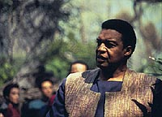
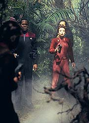
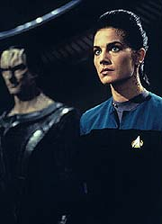
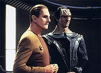
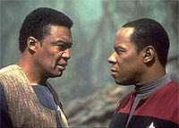

|

|
|
MANCHETE
DO EPISDIO
No
h resposta fcil para o dilema
de Benjamin Sisko frente aos Maquis
Episdio
anterior | Prximo
episdio
Sinopse:
Data Estelar:
desconhecida.
Ben Sisko contempla seu amigo, o
tenente-comandante Calvin Hudson, que, por sua presena no asteride,
confirma ser membro dos Maquis. Hudson tira o seu uniforme de uma
bolsa e o entrega a Sisko, dizendo que "ultimamente ele tem
ficado muito apertado em mim".
Hudson se diz encantado pela determinao destes colonos e diz no
poder dar as costas para eles como a Federao teria feito,
chamando novamente o tratado de um mero pedao de papel.
 Perguntado
por Sisko sobre o paradeiro de Dukat ele responde que nunca
imaginou que um dia Ben se aliaria com um Cardassiano contra ele.
Hudson faz uma ltima proposta a Sisko de utilizar Deep Space
Nine como uma base Maquis.
Quando Sisko recusa, ele e seus companheiros so tonteados pelos
Maquis. De volta estao, Sisko tem uma reunio com a
almirante Necheyev, que lhe d o sermo padro de que o tratado
tem de ser honrado a todo custo, de passagem rotulando os Maquis
(e negando qualquer possvel valor para a causa deles) como um
"bando de cabeas-quentes irresponsveis".
Pouco antes de partir, ordena a Sisko que abra um dilogo com os
Maquis. Quando Kira entra no escritrio, ouve o desabafo de
Sisko:
"Estabelecer um dilogo? Que diabos ela acha que eu estou
tentando fazer todo este tempo? S porque um grupo de pessoas
pertence Federao no quer dizer que eles sejam todos
santos... O real problema a Terra. Na Terra no existe
pobreza, crime ou guerra --voc olha para fora do QG da Frota
Estelar e voc v o Paraso. Bem, fcil ser santo no Paraso.
Mas os Maquis no vivem no Paraso. Aqui, na Zona
Desmilitarizada, esses problemas ainda no foram resolvidos. Aqui
no existem santos, apenas pessoas. Famintas, assustadas e
determinadas a fazer o que for necessrio para sobreviver, quer
isto receba a aprovao da Federao ou no."
(Ira Steven Behr sente muito orgulho destas linhas, que ele
considera uma sntese (e um ponto de partida) de como DS9 alargou
os horizontes da viso infinitamente idealista de um futuro para
humanidade de Gene Roddenberry.)
Em seguida, Odo prende Quark como cmplice de Sakonna. Quark
fornece uma lista das armas vendidas e diz que ela estava
pretendendo us-las em breve. Sisko se encontra com uma alta
autoridade Cardassiana (o legado Parn) em visita a DS9.
 Sisko
assegura que todo o possvel est sendo feito para encontrar e
resgatar Dukat. Para o espanto de Sisko, Parn diz que isto no
necessrio e diz que Dukat acusado em Cardssia de liderar um
pequeno grupo de militares envolvidos no contrabando de armas para
a Zona Desmilitarizada.
Aps Parn partir, Sisko diz a Kira que agora eles precisam
encontrar Dukat mais do que nunca, pois agora ele tem certeza de
que o Comando Central Cardassiano est de fato contrabandeando
armas para seus colonos.
O'Brien determina uma nova lista de possveis esconderijos e
Sisko lidera uma nova expedio para tentar encontrar Dukat.
Desta vez, eles tm sucesso: recuperam Dukat e prendem vrios
Maquis.
Sisko deixa Amaros fugir com um recado pra Hudson: "Diga a
ele que eu ainda no disse Frota sobre sua traio, ainda
temos tempo de resolver esta situao juntos, mas nosso tempo
est se esgotando. Diga a ele que ainda tenho o seu uniforme, ele
pode pegar de volta a hora que quiser."
De volta estao, Sisko visita Dukat e informa a este sobre
sua conversa com o legado Parn. Dukat fica chocado, finalmente
tendendo a acreditar que de fato Cardssia est contrabandeando
armas na Zona Desmilitarizada.
Dukat sugere que ele e Sisko se unam para impedir o contrabando e
os Maquis, sobre o que Sisko concorda. Quando Sisko vai deixando a
sala, Dukat agradece por ele ter salvo sua vida, ao que Sisko
responde: "Eu tenho certeza que voc teria feito o mesmo por
mim".
Dukat acha que o Comando Central est usando comerciantes
Xepolitas para o contrabando. Mas tarde, Dukat tambm
fundamental, quando ajuda Sisko & cia. a impedir que um
cargueiro desta raa entregue sua carga (de armas), levando
suspenso do contrabando do Comando Central.
Enquanto isso, Quark e Sakonna discutem em suas celas os detalhes
da "lgica dos Maquis". Sakonna, sensibilizada pela
discusso com Quark, confessa a Sisko que os Maquis pretendem
atacar um depsito de armas montado no interior de um complexo
civil em um planeta da Zona Desmilitarizada.
Dukat diz que pode ser capaz de descobrir o nome de tal planeta.
Sisko retorna a Volon III de forma a avisar os colonos (e por
conseguinte os Maquis) de que ele sabe do plano. Sisko
surpreendido por Hudson e um grupo de Maquis armados.
 Quando
o comandante Sisko oferece uma bolsa tendo no seu interior o
uniforme de Hudson, este a desintegra, simbolizando que no h
mais retorno para ele. Sisko avisa que se eles forem atacar, ele
os impedir, custe o que custar.
Nossos heris esperam com trs Exploradores em Bryma (o local do
depsito, segundo as fontes de Dukat). Eles devem impedir que os
Maquis cheguem ao alcance dos sensores do planeta, o que pode
precipitar uma guerra em larga escala.
Sisko & cia. conseguem impedir o ataque Maquis, apesar do
confronto aberto entre eles (Exploradores contra naves Maquis).
Sisko deixa Hudson escapar por se negar a destruir sua nave.
De volta a DS9, j com Dukat rumando de volta para casa, Ben
recebe os cumprimentos do Comando da Frota por ter evitado uma
guerra, sobre o que ele reflete ter talvez apenas adiado o inevitvel.
Comentrios:
O episdio faz um bom servio em colocar Sisko em uma difcil
situao. Hudson fala claramente ao comandante de DS9 sobre os
seus motivos e objetivos, em uma longa cena logo no incio do
episdio. (A linha, logo no incio da cena, sobre o uniforme de
Hudson, "ultimamente ele tem ficado muito apertado em
mim", estabelece o tom de forma maravilhosa.)
A almirante Necheyev estabelece claramente a posio da Federao
logo em seguida. (O tom e o texto da almirante so um pouco
excessivos. Talvez um problema da prpria personagem, mas serve
bem como preparao para o discurso de Sisko.)
 Aps
a visita do legado Parn, Sisko percebe que o Comando Central
Cardassiano est de fato contrabandeando armas para os seus
colonos e que Cardssia planeja usar o rapto de Dukat
(provavelmente junto com o "sacrifcio poltico" de um
nmero de outros oficiais Cardassianos em alguma espcie de
"lista negra") como uma conveniente "cortina de
fumaa" para esse ato escuso.
Quark fornece uma lista das armas compradas por Sakonna, para uso
iminente.
O que, sem muita reflexo, se traduz em algumas concluses:
- Os Maquis vo atacar, e no vai ser algo pequeno.
- Sisko no pode pedir ajuda a Frota, como poderia e deveria,
pois acabaria por expor a traio de Hudson.
- A Federao est "bufando no cangote de Sisko" por
resultados, pois para quem no estiver contando, foram dois
raptos e a destruio de uma nave com 78 Cardassianos a bordo,
em sua estao, s na primeira parte deste episdio. (No
seria interessante que a almirante tivesse deixado um adido seu na
estao para "supervisionar" os progressos de Sisko?
Com certeza a mobilizao dos nicos trs Exploradores da estao
aps a libertao de Dukat chamaria alguma ateno.)
- O Comando Central tambm no vai fornecer nenhuma ajuda, pois
esto "sujos" desde o comeo.
E agora, Sisko?
O comandante decide insistir no resgate de Dukat. Pois,
conseguindo tal feito, a Federao vai dar uma maneirada com
ele, e Dukat uma fonte de valiosos recursos independente da
Federao e de Cardssia. E mais, aproveitando a
"deixa" do Comando Central, a possibilidade de Sisko
fazer alguma espcie de acordo com Dukat mais tarde clara.
O resgate de Dukat, em si, realizado com uma bela cena de ao.
Mas o que realmente digno de nota o recado que Sisko envia
(atravs de Amaros) a Hudson. Excepcional!
E por falar em fazer algo juntos com diferentes agendas:
 Aps
descobrir da natureza da visita de Parn, Dukat decide aceitar a
ajuda de Sisko para deter o contrabando de armas em troca da sua
ajuda para deter os Maquis (com certeza uma confisso assinada
por um mercador Xepolita, detalhando suas ltimas negociaes
com os Cardassianos, vir bem a calhar na volta de Dukat a Cardssia).
O contrabando de armas e os Maquis so impedidos.
( raro quando os elementos de uma trama fazem tanto sentido, por
isto fiz questo de detalhar bem.)
E todos viveram felizes para sempre? Ser?
Os Maquis foram detidos desta vez e Sisko "perdeu" um
dos seus melhores amigos. Ao final do episdio Sisko s pode
imaginar que se a histria tivesse sido um pouco diferente
poderia ser Cal Hudson sentado em sua cadeira e ele l fora se
escondendo em algum lugar na Zona Desmilitarizada.
Nem sempre existem respostas fceis...
Fechando a conta:
A direo de Corey Allen se revelou extremamente competente. As
cenas de batalha ao final do episdio foram muito bem executadas
(especialmente por retratar o cuidado que ambas partes tem de no
matar ningum do outro lado, como j tinha ficado claro quando
do resgate de Dukat) e a utilizao do uniforme de Hudson de
forma simblica, para sua desero, absolutamente brilhante.
desnecessrio repetir que as cenas entre Dukat & Sisko so
infinitamente assistveis novamente. E Brooks e Alaimo conseguem
ainda superar as suas respectivas atuaes do episdio
anterior.
Sisko ao final do episdio, de onde ele emerge como um heri
complexo com diversos conflitos internos e dvidas, consegue
interromper o contrabando de armas do Comando Central (com a ajuda
de Dukat) e impedir o iminente ataque Maquis, dando a Hudson a
chance de voltar atrs at o ltimo segundo possvel e imaginvel.
" fcil ser santo no paraso" talvez a frase que
melhor identifica Deep Space Nine enquanto srie.
Dukat uma delcia de se assistir. Foi ele que iniciou o
tiroteio quando do seu resgate. Ele conseguiu resistir sonda
mental de Sakonna e depois se ofereceu para "retribuir a
gentileza" do interrogatrio. Ele enalteceu o sistema de
justia Cardassiano e logo depois, ante a perspectiva de ser
processado em tal sistema, arrumou rapidamente uma alternativa
estratgica com Sisko. Vale tambm destacar a cena em que Dukat
faz o comandante do cargueiro Xepolita se "borrar" de
medo com sua incrvel presena. Dukat emerge deste episdio
como o mais complexo, interessante, melhor atuado e, sob qualquer
outro critrio, o maior e melhor antagonista da histria de Jornada
nas Estrelas.
Plana e Nogulich trabalham bem com o material recebido, bem como
todo o elenco regular.
Problemas, como a falta de maior intensidade nas cenas envolvendo
Sakonna e Quark (separados ou juntos), a (j comentada) fraca
interpretao de Bernie Casey (como Cal Hudson), que fere
especialmente uma longa cena entre Sisko e Hudson no comeo do
episdio, e uma pequena gafe de trama, tendo todos os oficiais
graduados de Deep Space Nine no combate final, no pem por
terra este grande episdio.
(Porm se no fosse a informao obtida de Sakonna, por meio
da persuaso de Quark, eles no teriam como estabelecer a misso
dos Maquis, mesmo com os recursos da Frota Estelar.)
"The Maquis" um dos melhores episdios duplos de
Jornada, estabelecendo um firme gancho onde pendurar slidas histrias
futuras. Uma deliciosa "Caixa de Pandora" que no iria
se fechar to cedo...
Citaes
Dukat - "Why? Because
Vulcans don't lie?"
("Por que? Porque Vulcanos no mentem?")
Sisko - "As a rule they don't."
("Como regra, no.")
Dukat - "They don't blow up ships, either. As a
rule."
("Eles tambm no explodem cargueiros. Como regra."
Dukat - "I thought you were strong, Commander. But you're
not. You're a fool, a sentimental fool."
("Eu pensei que voc fosse forte, Comandante. Mas voc no
. Voc um tolo, um tolo sentimental.")
Sisko - "I said I'd stop the Maquis, and I did. But I
won't kill a good man for defending his home."
("Eu disse que ia parar os Maquis, e eu fiz. Mas no vou
matar um bom homem por defender seu lar.")
Dukat - "You disappoint me."
(Voc me desaponta.")
Sisko - "Don't expect me to lose sleep over it."
("No espere que eu v perder o sono por causa
disto.")
Trivia:
 Presena de gul Dukat.
Presena de gul Dukat.
Participao de Tony Plana como
Amaros. Tony Plana (nascida em 1953, em Cuba), j participou de sries
como "Resurrection Blvd.", "Total Security",
"Bakersfield P.D.", "Hill Street Blues" e
"Miami Vice" e em filmes como "An Officer and a
Gentleman", "Nixon" e "JFK", entre
outros.
Participao de Natalija Nogulich
como a almirante Necheyev. Natalija Nogulich j participou de
filmes como, "Hoffa" e sries como "The
Practice", "Frasier", "L.A. Law" e
"Picket Fences". Participou, como a almirante, dos
seguintes episdios de Jornada: "The Search, Part
II", "Preemptive Strike", "The
Maquis, Part II", "Journey's End", "Descent,
Part I" e "Chain of Command, Part I".
Participao de Bernie Casey como
Cal Hudson.
Participao de John Schuck como
legado Parn. John Schuck (nascido a 04/02/1940 em Boston,
Massachusetts, EUA), j participou de filmes como os filmes IV e
VI de Jornada nas Estrelas, no papel do embaixador Klingon,
e o filme "Dick Tracy", como um reprter. Tambm
trabalhou em TV, em sries como "Babylon 5" (personagem
Draal), "Roots", "Mash", "Bonanza",
"Gunsmoke" e muitas outras, at o recente episdio da
sexta temporada de Voyager, "Muse".
Participao de Michael Bell como um
Xepolita. Michael Bell uma verdadeira lenda no que se refere a
emprestar a sua voz a personagens de animao. Os crditos so
muito numerosos, mas aqui vai uma amostra: "Scooby and
Scrappy-Doo", "Devlin", "Speed Buggy",
"The Smurfs", "The Snorks",
"Transformers", "G.I.Joe", "Challenge of
the GoBots", "The Pryde Of the X-Men",
"Superman", "Spiral Zone", "Jonny
Quest", "Galtar and the Golden Lance", "the
Incredible Hulk", "Alladin", "The
Rugrats", "Tom and Jerry", "The Jetsons",
"Darkwing Duck", "InHumanoids", "Saber
Rider and the Star Sheriffs", "My Little Pony",
"The World's Greatest Superfriends",
"Gargoyles", "Batman: The Animated Series",
"Duckman", "Tiny Toon Adventures", "Tale
Spin", entre muitos outros. Tambm trabalhou como ator em inmeras
sries famosas como: "Dallas", "Fame",
"Chips", "MASH", "Charlie's Angels",
"The Mary Tyler Moore Show", "Mission:
Impossible" e "The Monkees". Participou dos
seguintes episdios de Jornada: "Encounter
At Farpoint", como Groppler Zorn, "The
Homecoming", como Borum, e "The Maquis, Part
II", como um Xepolita.
Somente Ira Steven
Behr foi listado no "press release" da Paramount como
tendo escrito este episdio.
Para saber tudo sobre os Maquis, clique aqui.
Ficha
tcnica:
Histria de Rick Berman
& Michael Piller & Jeri Taylor e Ira
Steven Behr
Roteiro de Ira Steven Behr
Direo de Corey Allen
Exibido em 02/05/1994
Produo: 041
Elenco:
Avery Brooks como
Benjamin Lafayette Sisko
Ren Auberjonois como Odo
Nana Visitor como Kira Nerys
Colm Meaney como Miles Edward O'Brien
Siddig El Fadil como Julian Subatoi Bashir
Armin Shimerman como Quark
Terry Farrell como Jadzia Dax
Cirroc Lofton como Jake Sisko
Elenco convidado:
Tony Plana como Amaros
John Schuck como o legado Parn
Natalija Nogulich como a almirante Alynna Necheyev
Bertila Damas como Sakonna
Michael Bell como o Xepolita
Amanda Carlin como Kobb
Marc Alaimo como gul Dukat
Bernie Casey como Cal Hudson
Michael Rose como Niles
Episdio
anterior | Prximo
episdio
|
|